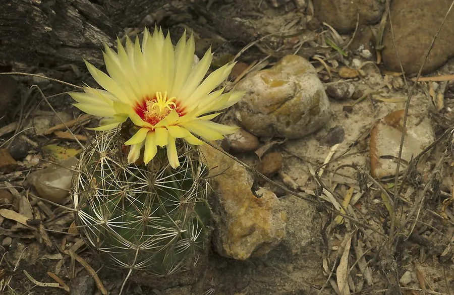

多肉植物 · 植物界
龙王球 Hamatocactus setispinus

仙人掌科龙王球属多年生肉质植物，球体棱脊明显、中刺带钩，花黄色、花心红色，是花期长、易开花的仙人球品种。
- 分类
- 门被子植物门纲木兰纲目石竹目科仙人掌科属龙王球属
- 栖息环境
- 原产墨西哥北部与美国南部的干旱地区，喜光耐旱
- 地理分布
- 原产墨西哥北部、美国南部；中国各地栽培
- 保护级别
- 暂无评估；栽培观赏植物，不涉及保护等级
物种志
龙王球为仙人掌科龙王球属多年生肉质植物，球体球形至短圆柱形，高约十至二十厘米，直径八至十二厘米。棱十二至十五条，刺座排列于棱脊，周刺细密，中刺一枚、先端弯曲成钩状，红褐色。花生于球体顶部，花冠漏斗状，黄色、花心红色，花期夏季至秋季，单花可开数日；浆果球形，成熟时红色，种子黑色。
龙王球原产墨西哥北部和美国南部，中国各地作为观赏仙人球栽培。它喜光、耐旱，夏季为生长和开花旺季；适宜疏松透气、排水良好的颗粒基质，忌积水和闷热，冬季需保持干燥。花黄色、花心红色，色彩明快，且容易开花，是仙人球爱好者喜爱的品种；球体上的钩刺较为锋利，搬动时需戴手套。繁殖以播种和嫁接为主。
形态与习性
- 株型球形至短圆柱形
- 球径直径 8–12 cm，棱 12–15 条
- 花期夏至秋季，花黄心红
- 光照极喜光，全日照易开花
- 水分耐旱，冬季保持干燥
- 土壤疏松排水良好的颗粒土
- 主要用途仙人球盆栽观花
趣味知识
- 龙王球的中刺先端弯曲成钩，因此又名钩刺球，搬动时要格外小心。
- 它的花黄色、花心红色，一朵花能开好几天，在仙人球中花期较长。
- 龙王球在阳光充足的夏季容易连续开花，是新手也能养开花的品种。